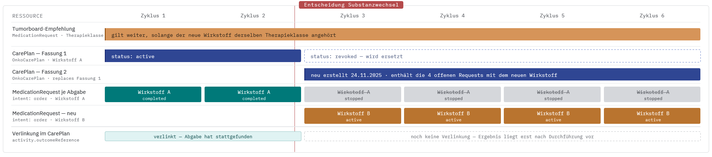
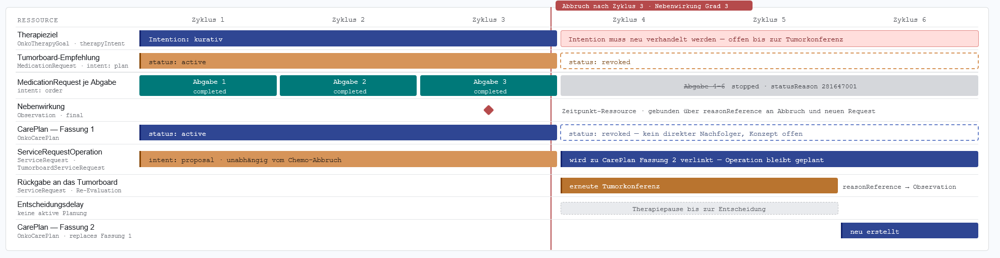
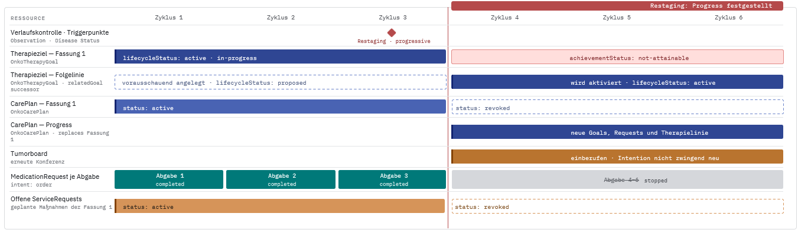
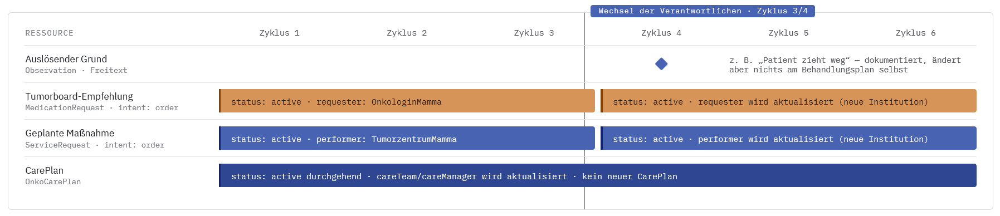
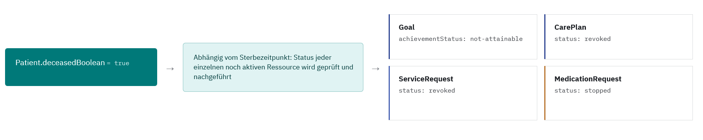

Implementierungsleitfaden Therapieziele Onkologie - Local Development build (v1.0.0-ballot) built by the FHIR (HL7® FHIR® Standard) Build Tools. See the Directory of published versions
Abweichende Szenarios
Diese Seite ergänzt das Anwendungsbeispiel Mammakarzinom (neoadjuvant) um Verlaufsabweichungen vom dort beschriebenen Standardverlauf. Während das Hauptbeispiel einen unkomplizierten Verlauf mit pathologischer Komplettremission zeigt, treten in der klinischen Praxis regelmäßig Abweichungen von der ursprünglichen Therapieplanung auf, von planmäßigen Anpassungen bis hin zum vorzeitigen Abbruch der Therapielinie.
Für jedes der folgenden Szenarien wird gezeigt, wie sich das jeweilige klinische Ereignis auf Ressourcenebene abbilden lässt: welche Elemente sich ändern (z. B. status, statusReason), welche Verknüpfungen neu entstehen (z. B. priorPrescription, reasonReference) und welche Auswirkungen dies auf Therapielinie (OnkoTherapyLine) und Therapieziel (OnkoTherapyGoal) hat.
Die unten aufgeführten, beispielhaften Szenarien sind rein informativ und daher nicht in Bundles dargestellt.
Reguläres Ende mit Dosisanpassung
Die Therapie wird wie geplant fortgeführt und abgeschlossen, die Dosis wird jedoch im Verlauf angepasst.
Beispiel: Die Tumorboard-Empfehlung wird umgesetzt, pro geplanter Abgabe entsteht ein MedicationRequest. Nach 2 von 6 Zyklen wird die Dosis reduziert. Die noch offenen Requests werden gestoppt und durch neue ersetzt, gebündelt in einem neuen CarePlan. Das Tumorboard wird dafür nicht erneut einberufen.

Merkmale:
- Die noch nicht durchgeführten
MedicationRequestserhalten den Statusstopped; imstatusReasonkann der entsprechende Code angegeben werden. - Beim ursprünglichen
CarePlanwird der Status aufrevokedgesetzt. Ein neu erstellterCarePlanenthält die neuenMedicationRequestsmit der angepassten Dosis, übernimmt aber die übrigen Merkmale des ursprünglichen CarePlans. - Die Tumorboard-Empfehlung bleibt unverändert bestehen.
Reguläres Ende mit Substanzwechsel
Die Therapie wird planmäßig abgeschlossen, ein oder mehrere Wirkstoffe des Regimes werden im Verlauf jedoch angepasst (ausgetauscht, ergänzt oder abgesetzt). Abgrenzung: gemeint ist immer ein Wirkstoffwechsel, nicht ein Arzneimittel- oder Präparatewechsel. Ein Fertigarzneimittel-Austausch bei gleichem Wirkstoff erzeugt weder einen neuen CarePlan noch einen Statuswechsel.
Unterkategorien eines Substanzwechsels:
- Wirkstoff wird ausgetauscht
- Neuer Wirkstoff kommt hinzu
- Wirkstoff fällt weg
Beispiel: Nach 2 von 6 Zyklen wird ein Wirkstoff ausgetauscht. Wie beim Dosiswechsel werden offene MedicationRequests gestoppt und in einem neuen CarePlan ersetzt. Ein reiner Austausch bleibt inhaltlich von der ursprünglichen Tumorboard-Empfehlung gedeckt (meist auf Ebene der Therapieklasse), das Tumorboard wird daher nie erneut einberufen.

Merkmale:
- Wirkstoff wird ausgetauscht:
- Die noch nicht durchgeführten
MedicationRequestserhalten den Statusstopped; imstatusReasonkann der entsprechende Code angegeben werden. - Beim ursprünglichen
CarePlanwird der Status aufrevokedgesetzt. Ein neu erstellterCarePlanenthält die neuenMedicationRequests, übernimmt aber die übrigen Merkmale (beispielsweiseTherapieIntent) des ursprünglichen CarePlans. - Das Tumorboard wird nicht neu einberufen, die Empfehlungen des Tumorboards bleiben somit bestehen.
- Die noch nicht durchgeführten
- Neuer Wirkstoff kommt hinzu:
- Die noch nicht durchgeführten
MedicationRequestserhalten den Statusstopped; imstatusReasonkann der entsprechende Code angegeben werden. - Beim ursprünglichen
CarePlanwird der Status aufrevokedgesetzt. Ein neu erstellterCarePlanenthält die neuenMedicationRequests. - Es kann sein, dass das Tumorboard neu einberufen werden muss; somit können sich die neuen Empfehlungen ändern und dementsprechend auch die Merkmale, die sonst vom ursprünglichen CarePlan übernommen würden.
- Die noch nicht durchgeführten
- Wirkstoff fällt weg:
- Die noch nicht durchgeführten
MedicationRequestserhalten den Statusstopped; imstatusReasonkann der entsprechende Code angegeben werden. - Es werden keine neuen
MedicationRequestserstellt, es sei denn es handelt sich um eine Medikationskombination, welche in einemMedicationRequestabgebildet wird. Hierfür muss dann ein neuerCarePlanerstellt werden. Wenn das Tumorboard neu einberufen werden muss, können sich auch hier die Merkmale des ursprünglichen CarePlans ändern. Andernfalls bleiben die Merkmale gleich.
- Die noch nicht durchgeführten
Abbruch wegen Nebenwirkung
Die Therapielinie wird vorzeitig beendet, da eine behandlungsassoziierte Nebenwirkung die Fortführung nicht zulässt.
Beispiel: Nach 2 von 6 Zyklen treten schwerwiegende Nebenwirkungen ein, sodass die Chemotherapie abgebrochen werden muss. Das Tumorboard wird erneut einberufen und ein neuer CarePlan mit entsprechendem TherapieIntent, Goals und Behandlungsvorschlägen erstellt. Ein bereits geplanter ServiceRequest (z. B. für begleitende Diagnostik) wird dabei unverändert aus dem bisherigen CarePlan in den neu erstellten CarePlan übernommen.

Merkmale:
- Die noch nicht durchgeführten
MedicationRequestserhalten den Statusstopped; imstatusReasonkann der entsprechende Code angegeben werden. - Soll ein bereits geplanter
ServiceRequestnicht mehr durchgeführt werden, wird dessen Status aufrevokedgesetzt. - Beim ursprünglichen
CarePlanwird der Status aufrevokedgesetzt. - Die aufgetretenen Nebenwirkungen werden in
Observationsabgebildet. Diese können dann entsprechend alsreasonReferencebei der neuen Medikation verlinkt werden. - Das Tumorboard wird neu einberufen, daraus entsteht ein neuer
CarePlan. Dieser enthält die neue Behandlungstherapie und kann einen anderenTherapieIntentsowie andereGoalsbesitzen.
Abbruch wegen Progress
Die Therapielinie wird vorzeitig beendet, da unter der Behandlung ein Progress der Erkrankung festgestellt wird.
Beispiel: Nach 3 Zyklen findet ein Progress der Erkrankung statt. Dies führt dazu, dass die initiale Therapie so nicht weitergeführt werden kann. Da zu Beginn aber bereits ein potenzieller Progress der Erkrankung im ersten Tumorboard mit eingeplant wurde, wurde bereits ein CarePlan erstellt, welcher umgesetzt werden soll, sobald es zu einem Progress kommt.

Merkmale:
- Die noch nicht durchgeführten
MedicationRequestserhalten den Statusstopped; imstatusReasonkann der entsprechende Code angegeben werden. - Soll ein bereits geplanter
ServiceRequestnicht mehr durchgeführt werden, wird dessen Status aufrevokedgesetzt. - Beim ursprünglichen
CarePlanwird der Status aufrevokedgesetzt. - Wurde beim ersten Tumorboard bereits ein
CarePlanfür den Progressfall vorbereitet, wird dessen Status nun aufactivegesetzt, statt einen neuen CarePlan zu erstellen. - Falls beim erstmaligen Treffen des Tumorboards kein CarePlan für einen Progress beschlossen wurde, muss das Tumorboard neu einberufen werden. Daraus entsteht ein neuer
CarePlan. Dieser enthält die neue Behandlungstherapie und kann einen anderenTherapieIntentsowie andereGoalsbesitzen.
Abbruch aus anderen Gründen
Die Therapielinie wird aus Gründen beendet, die nicht unmittelbar in der Erkrankung oder der Therapie selbst liegen.
Beispiel: Der Grund ist medizinisch nicht begründet, z. B. Patient zieht weg, Arzt-Patienten-Verhältnis gestört, Unfall. Die Tumorboard-Empfehlung selbst bleibt inhaltlich unverändert gültig, MedicationRequest und ServiceRequest laufen weiter mit Status active. Es ändern sich nur die Verantwortlichen, requester, performer bzw. careManager werden aktualisiert, kein Statuswechsel, kein Ersatz.

Merkmale:
- Die Empfehlung des Tumorboards bleibt inhaltlich und im Status unverändert
active. Es ändern sich nur die Referenzen auf die Verantwortlichen —requester,performerbzw.careManager— auf den Ressourcen selbst, ohne dass diese ersetzt, gestoppt oder neu angelegt werden.
Versterben der Patientin
Die Patientin verstirbt während der laufenden Therapielinie.
Beispiel: Die Patientin verstirbt während der Behandlung. Dementsprechend wird die Patientenressource geändert. Folglich müssen die noch offenen Ressourcen im Status angepasst werden.

Merkmale:
- In der Patientenressource wird das Element
Patient.deceasedBooleanauftruegesetzt. - Alle noch offenen Ressourcen wie
MedicationRequest,ServiceRequest,CarePlanundGoalmüssen auf den entsprechenden Abbruchstatus gesetzt werden. Falls einstatusReasonbei der Ressource vorhanden ist, kann der entsprechende Code angegeben werden.